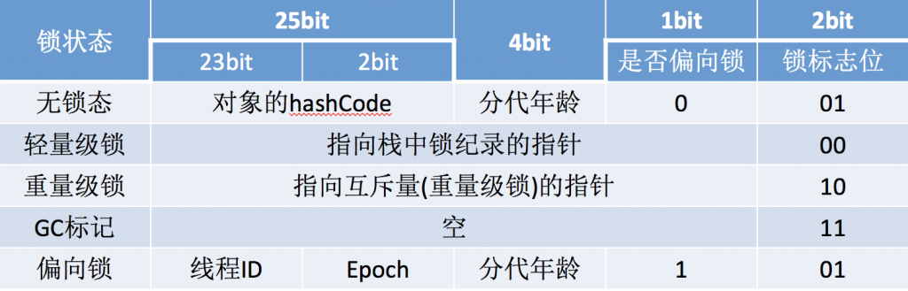

深入浅出synchronized
synchronized 可以保证方法或者代码块在运行时，同一时刻只有一个方法可以进入到临界区，同时它还可以保证共享变量的内存可见性。
1.6版本之前 synchronized 被称之为 重量级锁 1.6版本对 synchronized 进行了优化，主要优化的点在于 减少 获得锁和释放锁带 来的性能消耗，为实现这个目的引入了偏向锁、与轻量级锁，自适应自旋，锁消除，锁粗话等。
作用域
Java 中每一个对象都可以作为锁，这是 synchronized 实现同步的基础：
- 普通同步方法，锁是当前实例对象
- 静态同步方法，锁是当前类的 class 对象
- 同步方法块，锁是括号里面的对象
JVM实现方式
|
|
利用 Javap 工具查看生成的 class 文件信息来分析 synchronized 的实现

查看带有Synchronized语句块的class文件可以看到在同步代码块的起始位置插入了moniterenter指令，在同步代码块结束的位置插入了monitorexit指令。(JVM需要保证每一个monitorenter都有一个monitorexit与之相对应，但每个monitorexit不一定都有一个monitorenter)
但是查看同步方法的class文件时，同步方法并没有通过指令monitorenter和monitorexit来完成，而被翻译成普通的方法调用和返回指令，只是在其常量池中多了ACC_SYNCHRONIZED标示符。JVM就是根据该标示符来实现方法的同步的：当方法调用时，调用指令将会检查方法的 ACC_SYNCHRONIZED 访问标志是否被设置，如果设置了，执行线程将先获取monitor，获取成功之后才能执行方法体，方法执行完后再释放monitor。在方法执行期间，其他任何线程都无法再获得同一个monitor对象。 其实本质上没有区别，只是方法的同步是一种隐式的方式来实现，无需通过字节码来完成。
1）同步代码块是使用 monitorenter 和 monitorexit 指令实现的；
2）同步方法（在这看不出来需要看JVM底层实现）依靠的是方法修饰符上的ACC_SYNCHRONIZED 实现。
底层原理
moniterenter和moniterexit指令是通过monitor对象实现的。 Synchronized的实现不仅与monitor对象有关，还与另一个东西密切相关，那就是对象头。
对象头
众所周知Java中万物皆对象，那对象在内存中是怎么存储的呢？
每个对象分为三块区域:对象头、实例数据和对齐填充。
对象头包含两部分，第一部分是
Mark Word，用于存储对象自身的运行时数据，如哈希码（HashCode）、GC分代年龄、锁状态标志、线程持有的锁、偏向线程 ID、偏向时间戳等等，这一部分占一个字节。第二部分是Klass Pointer（类型指针），是对象指向它的类元数据的指针，虚拟机通过这个指针来确定这个对象是哪个类的实例，这部分也占一个字节。(如果对象是数组类型的，则需要3个字节来存储对象头，因为还需要一个字节存储数组的长度) 实例数据存放的是类属性数据信息，包括父类的属性信息，如果是数组的实例部分还包括数组的长度，这部分内存按4字节对齐。
填充数据是因为虚拟机要求对象起始地址必须是8字节的整数倍。填充数据不是必须存在的，仅仅是为了字节对齐。
对象头信息是与对象自身定义的数据无关的额外存储成本，考虑到虚拟机的空间效率，Mark Word被设计成一个非固定的数据结构以便在极小的空间内存储尽量多的信息，它会根据对象的状态复用自己的存储空间。例如在32位的HotSpot虚拟机 中对象未被锁定的状态下，Mark Word的32个Bits空间中的25Bits用于存储对象哈希码(HashCode)，4Bits用于存储对象分代年龄，2Bits用于存储锁标志 位，1Bit固定为0，在其他状态(轻量级锁定、重量级锁定、GC标记、可偏向)下对象的存储内容如下表所示。

关于Synchronized的实现在java对象头里较为简单，只是改变一下标识位，并将指针指向monitor对象的起始地址，其实现的重点是monitor对象。
Monitor对象
什么是Monitor？我们可以把它理解为一个同步工具，也可以描述为一种同步机制，它通常被描述为一个对象。
在Java虚拟机(HotSpot)中，monitor是由ObjectMonitor实现的，其主要数据结构如下(位于HotSpot虚拟机源码ObjectMonitor.hpp文件，C++实现的)
ObjectMonitor中有几个关键属性，
_count用来记录该线程获取锁的次数_WaitSet存放处于wait状态的线程队列_EntryList存放处于等待获取锁block状态的线程队列，即被阻塞的线程_owner指向持有ObjectMonitor对象的线程
当多个线程同时访问一段同步代码时，首先会进入_EntryList队列中，当某个线程获取到对象的monitor后进入_Owner区域并把monitor中的_owner变量设置为当前线程，同时monitor中的计数器_count加1，若线程调用wait()方法，将释放当前持有的monitor，_owner变量恢复为null，_count自减1，同时该线程进入_WaitSet集合中等待被唤醒。若当前线程执行完毕也将释放monitor(锁)并复位变量的值，以便其他线程进入获取monitor(锁)。如下图所示

Synchronized优化
高效并发是从JDK 1.5到1.6的重要改进，HotSpot虚拟机开发团队在这个版本上花费了大量的精力去实现各种锁优化技术，如适应性自旋（Adaptive Spinning），锁消除（Lock Elimination），锁粗化（Lock Coarsening），轻量级锁（Lightweight Locking）和偏向锁（Biased Locking）等。
JDK 1.6发布后，sychronized与ReetrantLock的性能基本持平，且虚拟机在未来的性能改进中肯定也会更加倾向于原生的sychnorized。

Sychronized vs RetrantLock
synchronizeduses a locking mechanism that is built into the JVM and MONITORENTER / MONITOREXIT bytecode instructions. So the underlying implementation is JVM-specific (that is why it is called intrinsic lock) and AFAIK usually (subject to change) uses a pretty conservative strategy: once lock is “inflated” after threads collision on lock acquiring, synchronized begin to use OS-based locking (“fat locking”) instead of fast CAS (“thin locking”) and do not “like” to use CAS again soon (even if contention is gone).ReentrantLock implementation is based on AbstractQueuedSynchronizer and coded in pure Java (uses CAS instructions and thread descheduling which was introduced it Java 5), so it is more stable across platforms, offers more flexibility and tries to use fast CAS appoach for acquiring a lock every time (and OS-level locking if failed).
So, the main difference between these locks implementations in terms of performance is a lock acquiring strategy (which may not exist in specific JVM implementation or situation).
ReentrantLock vs synchronized on CPU level? 两种锁的特点说很透彻。
补充
《深入理解Java虚拟机》有写1.6后Sychronized 、 RetrantLock 两者性能几乎持平，而Sychronized在1.6之前在高争用的场景性能下降的厉害。而反观JDK做的优化，大部分都是针对非高争用场景，比如自旋，轻量级锁，偏向锁等。另外一旦锁膨胀为重量级锁就不会转换回来。 当然还有锁粗化，锁消除，适应性自旋在高并发的场景下也能优化性能。 当然从理论上面来讲，两种锁在性能应该在一个水平级别，与其说现在Sychronized还不够好，不如说Sychronized还有较大的优化的空间。甚至在某些场景Sychronized有可能会比RetrantLock性能更好。（不然JVM完全可以基于RetrantLock来实现Sychronized）
Synchronized keyword is apt in situation such as lock coarsening, provides adaptive spinning,biased locking and the potential for lock elision via escape analysis. Those optimizations aren’t currently implemented for ReentrantLock.
参考文章
http://bigdatadecode.club/JavaSynchronizedTheory.html https://www.ibm.com/developerworks/cn/java/j-lo-synchronized/ http://www.iocoder.cn/JUC/sike/synchronized/
https://www.zhihu.com/question/39009953 https://stackoverflow.com/questions/36371149/reentrantlock-vs-synchronized-on-cpu-level https://stackoverflow.com/questions/11600520/synchronized-vs-reentrantlock-on-performance